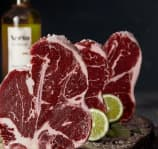

<section class="about-restaurant">
    <div class="restaurant-container">
        <h2 class="visually-hidden">
            About
        </h2>
        <div class="img-container">
            
            
            
        </div>
        <div class="about-restaurant-text-wrap">
            <p class="about-restaurant-text">At Mimino, we are experts in meat <span>preparation</span>. Our chefs use only the finest and freshest ingredients to <span>create delicious dishes</span> that showcase the flavors of premium cuts of meat.</p>
            <p class="about-restaurant-text">Our <span>slow-cooking process</span> and expert seasoning bring out the best in each dish, making for an unforgettable dining experience. Come taste the magic of <span>meat preparation</span> at Mimino.</p>
        </div>
    </div>
</section>